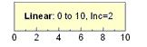

Der Dialog Achsen für Paralleldiagramme verfügt über Bedienelemente zum Anpassen von Achseneigenschaften spezifisch für parallele Koordinatendiagramme. Einstellungen, die auf den Registerkarten rechts im Dialog vorgenommen werden, werden auf die Achsen angewendet, die auf der linken Seite des Dialogs ausgewählt sind. Obwohl jede Achse individuell konfiguriert werden kann, beachten Sie, dass Sie Anpassungen auf mehrere Achsen anwenden, indem Sie die Tasten Strg oder Shift während der Auswahl in der Achsenliste links gedrückt halten.
Wenn dieses Kontrollkästchen aktiviert ist, wird jeder Bereich der Achsenskalierung mit Werten für Maximum und Minimum für die Variable bestimmt (die Werte Von und Bis auf der Registerkarte Skalierung). Dies ermöglicht die maximale Verteilung der Datenpunkte entlang der Achse. Wenn dieses Kontrollkästchen deaktiviert ist, verwenden alle Achsen einen gemeinsamen Skalierungsbereich, bestimmt durch die Achse (Variable) mit dem größten Wertebereich.
Standardmäßig ist dieser Wert 0 und ermöglicht die maximale Verteilung von Datenpunkten entlang der Achse. Die Eingabe der Zahl n fügt einen Abstand der Achsenskalierung von n % an jedem Achsenende ein. Die Werte für Von und Bis werden dadurch nicht verändert.
Legen Sie den Anfangswert der Skala in diesem Textfeld fest.
Legen Sie den Endwert der Skala in diesem Textfeld fest.
| Linear | Lineare Standardskalierung: X'=X.  |
|---|---|
| Log10 | Logarithmische Skalierung zur Basis 10: X'=log(X) |
| Fest | Die Achse ist nicht skalierbar. Wenn Sie versuchen, die Skalierung zu ändern oder eine Operation durchzuführen, die die Skalierung ändert (z.B. durch das Hilfsmittel Achsenskalierung vergrößern |
|---|---|
| Normal |
Die Achse ist skalierbar. Ändern Sie die Achsenskalierung und verwenden Sie das Hilfsmittel Achsenskalierung vergrößern Wenn Sie mit Hilfe der Dialoge Diagrammeinstellungen oder Layerverwaltung Datensätze zum Diagramm hinzufügen oder aus ihm entfernen, müssen Sie das Kontrollkästchen Neu skalieren in diesen Dialogen aktivieren. Auf diese Weise werden die Skalierungen bei Datenänderung automatisch angepasst. |
| Auto | Diese Option entspricht der Option Normal, ermöglicht es Origin jedoch auch, falls notwendig, die Achsen automatisch zu skalieren, um die gezeichneten Daten unterzubringen. |
| Festgelegt von - Normal bis | Der Wert Von der Achse ist festgesetzt und kann nur über die Bearbeitung des Wertes im Textfeld Von des Dialogs Achsen geändert werden, während sich der Wert Bis der Achse im Modus Normal befindet. |
| Normal von - Festgelegt bis | Der Wert Von der Achse befindet sich im Modus Normal, während der Wert Bis der Achse festgelegt ist und nur durch Bearbeiten des Werts im Textfelds Bis im Dialog Achsen geändert werden kann. |
| Festgelegt von - Automatisch bis | Der Wert Von der Achse ist festgelegt, während der Wert Bis der Achse von Origin automatisch neu skaliert werden kann. |
| Automatisch von - Festgelegt bis | Der Wert Von der Achse kann von Origin automatisch neu skaliert werden, während der Wert Bis der Achse festgelegt ist. |
Beachten Sie, dass der Stil der großen Hilfsstriche auf eine andere Option gesetzt werden muss als Kein (Registerkarte Linie und Hilfsstriche).
| Nach Inkrement | Positionieren Sie eine große Hilfsstrichsmarkierung bei allen n Skalierungseinheiten und legen Sie n im zugehörigen Feld fest. Hilfsstrichsbeschriftungen werden bei jeder großen Hilfsstrichsmarkierung positioniert. Legen Sie optional eine Anzahl der kleinen Hilfsstriche fest. |
|---|---|
| Nach # der großen Hilfsstriche | Positionieren Sie m große Hilfsstrichsmarkierungen und legen Sie m im zugehörigen Textfeld fest. Hilfsstrichsbeschriftungen werden bei jeder großen Hilfsstrichsmarkierung positioniert. Legen Sie optional eine Anzahl der kleinen Hilfsstriche fest. |
| Min/Max | Positionieren Sie die großen Hilfsstrichsmarkierungen nur bei den Skalierungswerten Min (Von) und Max (Bis). Dies ist die Standardeinstellung für Paralleldiagramme. |
Legen Sie die Anzahl der kleinen Hilfsstriche, die zwischen den angrenzenden großen Hilfsstrichen angezeigt werden sollen, im Textfeld Anzahl Kleine Hilfsstriche fest. Beachten Sie, dass der Stil der kleinen Hilfsstriche auf eine andere Option gesetzt werden muss als Kein (Registerkarte Linie und Hilfsstriche).
Die Bedienelemente der Registerkarte Beschriftung der Hilfsstriche werden auf die Registerkarte Anzeige und die Registerkarte Format aufgeteilt.
Verwenden Sie diese Auswahlliste, um die Beschriftungen der Hilfsstriche vor oder nach der Achse zu zeigen bzw. die Beschriftungen zu verbergen (Kein).
Die Beschriftungen werden auf den Markierungen der kleinen Hilfsstriche angezeigt.
| Dezimal: 1000 |
(1, 1000, 1000000, 1,00E+009) Hinweis: Der Schwellenwert zur Konvertierung in die wissenschaftliche Schreibweise wird über die Registerkarte Zahlenformat des Dialogs Optionen festgelegt (Einstellungen: Optionen). |
|---|---|
| Wissenschaftlich: 10^3 | (1*100, 1*103, 1*106, 1*109) |
| Technisch: 1k |
(1,0, 1,0k, 1,0M, 1,0G)
Unten können Sie unter * die unterstützten Technischen Datensuffixe nachlesen. Hinweis: Eine LabTalk-Systemvariable (@EF) wird bereitgestellt, um die Ingenieursschreibweise (Technisch) in eine nicht-technische Spalte einzugeben. Wenn Sie @EF = 1 setzen und dann mit Ingenieursschreibweise in eine Spalte mit einem anderen Format schreiben, wird Origin diese Eingabe als eine numerische Eingabe auffassen. Andernfalls (@EF = 0) wird Origin diese Eingabe als Text interpretieren (Standard). |
| Dezimal: 1.000 |
(1, 1.000, 1.000.000, 1.000.000.000)
Hinweis: Der Schwellenwert zur Konvertierung in die wissenschaftliche Schreibweise wird über die Registerkarte Zahlenformat des Dialogs Optionen festgelegt (Einstellungen: Optionen). |
| Wissenschaftlich: 1E3 |
(1E0, 1E3, 1E6, 1E9)
Hinweis: Eine Labtalk-Systemvariable (@ETE) kann verwendet werden, um die am Anfang stehende Null in wissenschaftlicher Notation zu verbergen. Die Standardeinstellung ist 0. Die Werte werden folgendermaßen angezeigt: (1E+00, 1E+03, 1E+06, 1E+09). Durch Festlegen von @ETE=1 werden die anführenden Nullen in der wissenschaftlicher Notation verborgen. Die Werte werden dann folgendermaßen angezeigt: (1E+0, 1E+3, 1E+6, 1E+9). |
| Benutzerdefiniert | Wählen Sie diese Option, um ein benutzerdefiniertes Format für die Hilfsstrichsbeschriftung festzulegen, wie z.B. das Festlegen der Anzahl von signifikanten Stellen oder Dezimalstellen. Verwenden Sie das Auswahlfeld Benutzerdefiniertes Format, um entweder eine Option aus der Auswahlliste zu wählen oder eine Option einzugeben. |
| Suffix | Äquivalent | Menge |
|---|---|---|
| k | Kilo | 10^3 |
| M | Mega | 10^6 |
| G | Giga | 10^9 |
| T | Tera | 10^12 |
| P | Peta | 10^15 |
| m | Milli | 10^-3 |
| u | Mikro | 10^-6 |
| n | Nano | 10^-9 |
| p | Pico | 10^-12 |
| f | Femto | 10^-15 |
|
Hinweis: "u" ist Origins Standardzeichen für Mikro. Die einzige Ausnahme sind Hilfsstrichsbeschriftungen von Achsen in Diagrammen, die "mu" unterstützen. Beachten Sie außerdem, dass Origin 7 nicht die Suffixe "E" und "a" unterstützt. |
Die angezeigten Dezimalstellen werden im Bearbeitungsfeld Dezimalstellen festgelegt.
Wenn Dezimalstellen festlegen aktiviert ist, legen Sie die angezeigten Dezimalstellen mit einer ganzen Zahl fest.
Jeder große und kleine Hilfsstrich wird durch die Zahl in diesem Textfeld dividiert. Bitte beachten Sie, dass dieses Textfeld auch Ausdrücke zulässt. Um beispielsweise alle Beschriftungen durch 1/3 zu teilen, geben Sie 1/3 in das Textfeld ein (dadurch werden alle Beschriftungen mit 3 multipliziert).
Geben Sie ein Präfix in dieses Textfeld ein, das vor jeder Hilfsstrichsbeschriftung angezeigt werden soll.
Geben Sie ein Suffix in dieses Textfeld ein, das nach jeder Hilfsstrichsbeschriftung angezeigt werden soll. Zum Beispiel: mm, mF, K.
|
Die Textfelder Präfix und Suffix unterstützen spezielle Formatierungsbefehle, bezeichnet als "Escape-Sequenzen". Um zum Beispiel das klein geschriebene griechische Zeichen "p" (π) zu jeder Hilfsstrichsbeschriftung hinzuzufügen, geben Sie |
Aktivieren Sie das Kontrollkästchen Pluszeichen, um ein Pluszeichen vor jeder positiven Hilfsstrichsbeschriftung zu zeigen.
Aktivieren Sie das Kontrollkästchen Minuszeichen, um ein Minuszeichen vor jeder negativen Hilfsstrichsbeschriftung zu zeigen.
Wählen Sie die Farbe für große und kleine Hilfsstrichsbeschriftungen aus dieser Auswahlliste. Wenn Auto ausgewählt ist, folgt die Farbe der Hilfsstrichsbeschriftung der Farbe der Achsenlinie.
Informationen zum Verwenden der Farbauswahl, einschließlich das Definieren von benutzerdefinierten Farben, finden Sie unter Benutzerdefinierte Farben definieren und verwenden.
| Schriftart | Wählen Sie die Schriftart für große und kleine Hilfsstrichsbeschriftungen aus dieser Auswahlliste. |
|---|---|
| Größe | Wählen Sie oder geben Sie die gewünschte Textgröße (in Punkten) für die Beschriftungen der großen und kleinen Hilfsstriche ein. |
| Fett | Aktivieren Sie das Kontrollkästchen Fett, um den Stil der Beschriftungen von großen und kleinen Hilfsstrichen auf Fett festzulegen. |
| Weiß hinterlegen | Wählen Sie diese Option, um einen separaten weißen Hintergrund für den Beschriftungstext der Hilfsstriche zu zeichnen. |
Origin unterstützt die beliebige Drehung von Hilfsstrichsbeschriftungen. Geben Sie eine positive Zahl in dieses Textfeld ein, um die Beschriftungen gegen den Uhrzeigersinn zu drehen, und eine negative Zahl, um sie im Uhrzeigersinn zu drehen (Origin ändert die eingegebene negative Zahl in die entsprechende positive Zahl gegen den Uhrzeigersinn).
Wählen Sie unter diesen drei Optionen, wie die Beschriftungen der Hilfsstriche mit ihren entsprechenden Achsenhilfsstrichen ausgerichtet werden sollen.
| Zentrum | Zentrieren Sie die Hilfsstrichsbeschriftungen mit den großen Hilfsstrichen. |
|---|---|
| Mittelpunkt zwischen Hilfsstrichen | Positionieren Sie die Hilfsstrichsbeschriftungen äquidistant zwischen den nebeneinander liegenden großen Hilfsstrichen. |
| Neben Hilfsstrichen | Richten Sie die linke Kante der Hilfsstrichsbeschriftungen an den großen Hilfsstrichen aus. |
Geben Sie den gewünschten Wert in die Textfelder Horizontal und Vertikal ein, um die horizontale und vertikale Position der Hilfsstrichsbeschriftungen in Bezug zur Achse festzulegen (100%=eine volle Schriftbreite).
Hinweis: Sie können Hilfsstrichsbeschriftungen manuell anticken, um sie auszuwählen, und sie mit den Pfeiltasten positionieren. Dies gilt auch für spezielle Hilfsstrichsbeschriftungen.
Aktivieren Sie dieses Kontrollkästchen, um sicher zu stellen, dass die Hilfsstrichsbeschriftungen immer neben der Achse gezeigt werden. Wenn dieses Kontrollkästchen deaktiviert ist, verbleiben die Hilfsstrichsbeschriftungen in ihrer Standardposition, auch wenn die Achsenposition geändert wird.
|
Sie können auf die Hilfsstrichsbeschriftungen klicken, um sie auszuwählen, und sie mit Hilfe der Pfeiltasten auf Ihrer Tastatur verschieben. |
Der Titel für die ausgewählte Achse wird angezeigt.
Standardmäßig lautet der Achsentitel %(?Y). Dies wird übersetzt mit "Langname (ansonsten Kurzname) + Einheit" der Y-Spalte einer festgelegten Zeichnung. Achsentitel können auch mit Hilfe von anderen Informationen als den Beschriftungszeilen Langname/Kurzname und Einheiten der Arbeitsblattspalten erzeugt werden. Um beispielsweise die Daten des ersten benutzerdefinierten Parameters in der Y-Spalte zu verwenden, würden Sie %(?Y, @LD) eingeben. In der vollständigen Liste der @Optionen können Sie Einzelheiten nachlesen.
Auch wenn es häufig vorzuziehen ist, wie oben Variablenotationen zu verwenden -- insbesondere beim Speichern Ihrer Anpassungen in einer Vorlagendatei --, können Sie einfach Ihren Achsentiteltext (a) in dieses Textfeld oder (b) direkt in das Achsentitelobjekt auf der Diagrammseite eingeben.
|
Wenn Sie |
Wählen Sie aus dieser Auswahlliste eine Farbe für den Titeltext aus. Siehe Benutzerdefinierte Farben definieren und verwenden
Origin unterstützt die beliebige Drehung der Titel. Wählen Sie oder geben Sie einen positiven Wert in dieses Textfeld ein, um den Titel gegen den Uhrzeigersinn zu drehen, bzw. einen negativen Wert, um den Titel im Uhrzeigersinn zu drehen.
Schriftart: Wählen Sie die Titelschriftart in der Auswahlliste aus.
Größe: Legen Sie die Größe des Achsentitels in dem Auswahlfeld fest.
Zeigen: Aktivieren Sie das Kontrollkästchen Zeigen, um die Haupt-/Nebengitternetzlinien anzuzeigen. Hauptgitternetzlinien sind gerade Linien, die von großen Hilfsstrichen ausgehen.
Farbe: Legen Sie die gewünschte Linienfarbe in der entsprechenden Auswahlliste fest. Siehe Benutzerdefinierte Farben definieren und verwenden
Stil: Wählen Sie den gewünschten Linienstil in der entsprechenden Auswahlliste.
Dicke: Geben Sie die gewünschte Liniendicke (in Punkten) im Kombinationsfeld Dicke oder wählen Sie sie aus.
Zeigen: Aktivieren Sie dieses Kontrollkästchen, um die Linie auf der ausgewählten Achse anzuzeigen.
Farbe: Wählen Sie eine Linien- und Hilfsstrichsfarbe aus dieser Auswahlliste. Siehe Benutzerdefinierte Farben definieren und verwenden
Dicke: Geben Sie eine gewünschte Linienstärke (in Punkten, wobei ein Punkt=1/72 Inch) für die Achse und die Hilfsstriche in dieses Kombinationsfeld ein oder wählen eine aus.
Pfeil: Aktivieren Sie dieses Kontrollkästchen, um den Pfeil am Achsenanfang oder -ende anzuzeigen.
| Form | Wählen Sie aus dieser Auswahlliste eine Pfeilform aus. |
|---|---|
| Breite | Geben Sie die gewünschte Pfeildicke (in Punkten) in das Kombinationsfeld ein oder wählen Sie diese aus. |
| Länge | Geben Sie eine gewünschte Pfeillänge (in Punkten, wobei 1 Punkt=1/72 Zoll) in dieses Kombinationsfeld ein oder wählen eine aus. |
| Versatz(%) | Geben Sie den gewünschten Wert ein oder wählen Sie ihn im Kombinationsfeld aus, um die Position des Pfeils relativ zum Achsenende festzulegen. |
Stil: Legen Sie den Anzeigestil der großen/kleinen Hilfsstriche mit dieser Auswahlliste fest.
Länge: Geben Sie eine gewünschte Länge für die kleinen/großen Hilfsstriche (in Punkten, wobei 1 Punkt=1/72 Inch) in dieses Kombinationsfeld ein oder wählen eine aus.
Auto: Die kleinen Hilfsstriche sind halb so lang wie die großen Hilfsstriche.
Farbe: Legen Sie die Farbe der großen/kleinen Hilfsstriche mit dieser Auswahlliste fest. Siehe Benutzerdefinierte Farben definieren und verwenden
Dicke: Geben Sie eine gewünschte Dicke für die kleinen/großen Hilfsstriche (in Punkten, wobei 1 Punkt=1/72 Inch) in dieses Kombinationsfeld ein oder wählen eine aus.